驗收日期：2026-11-06（Asia/Taipei）
驗收網址：线上版本
核心 API、會員註冊、健康資料、健管師配對與文字諮詢流程可運作；但尚未達到正式交付標準。
| 項目 | 結果 |
|---|---|
| /healthz | 通過：ok |
| /readyz | 通過：ready |
| API 整合測試 | 通過 1/1 |
| 諮詢流程測試 | 通過 8/8 |
| Production readiness | 通過 3/3 |

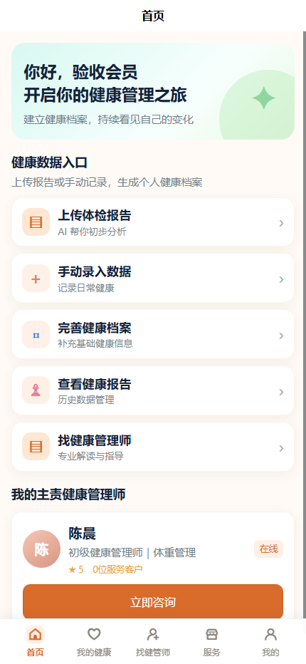
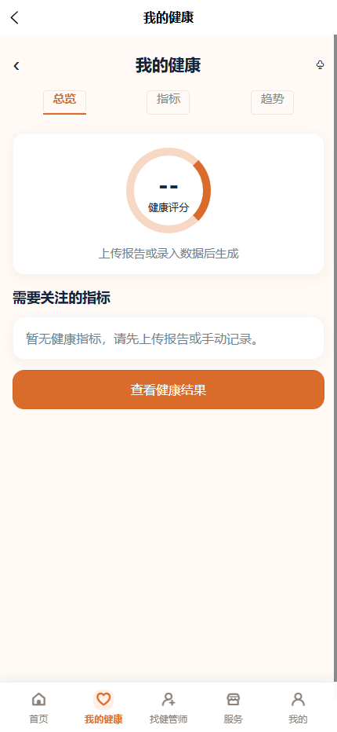
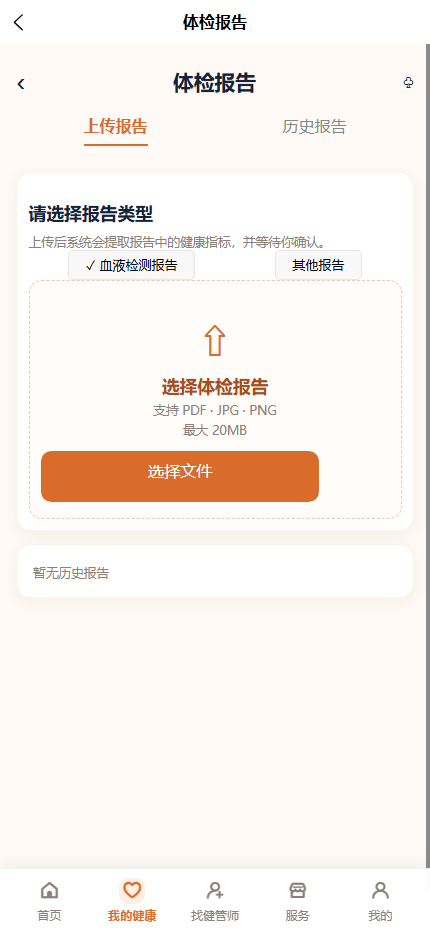
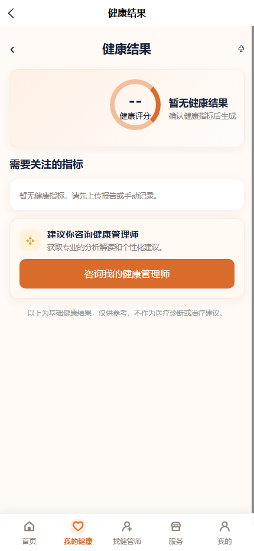
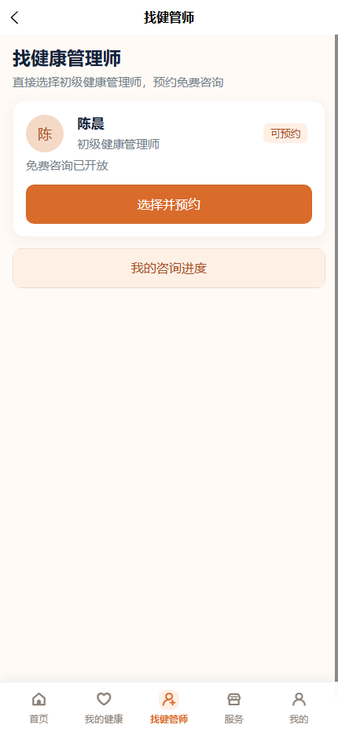
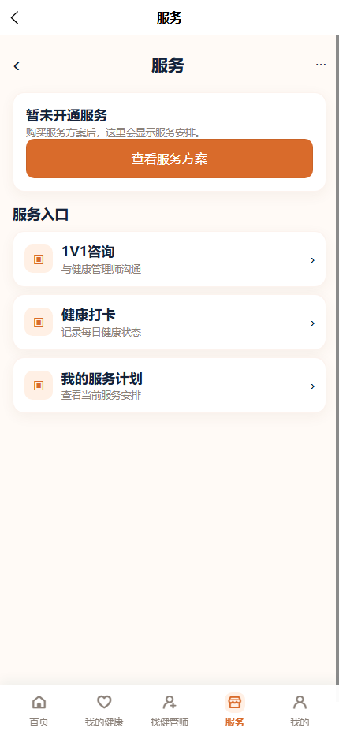
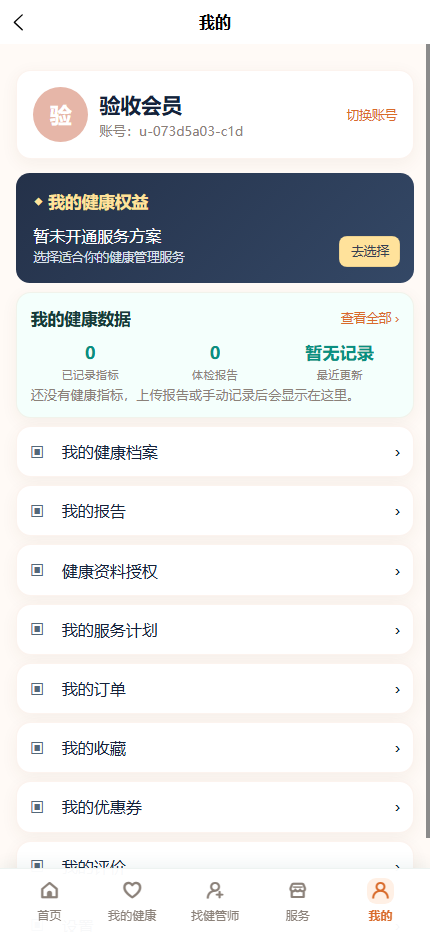
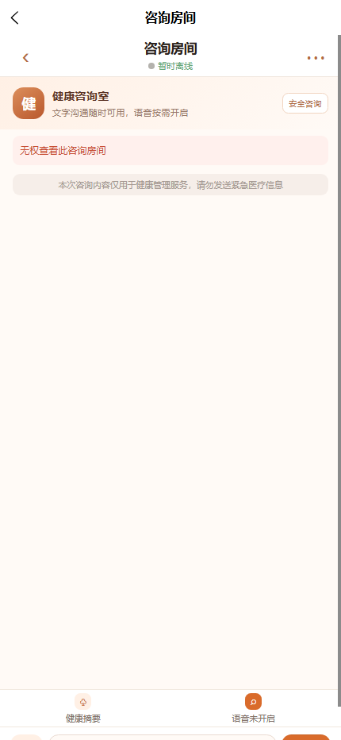
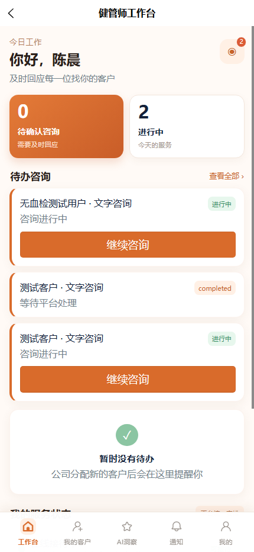
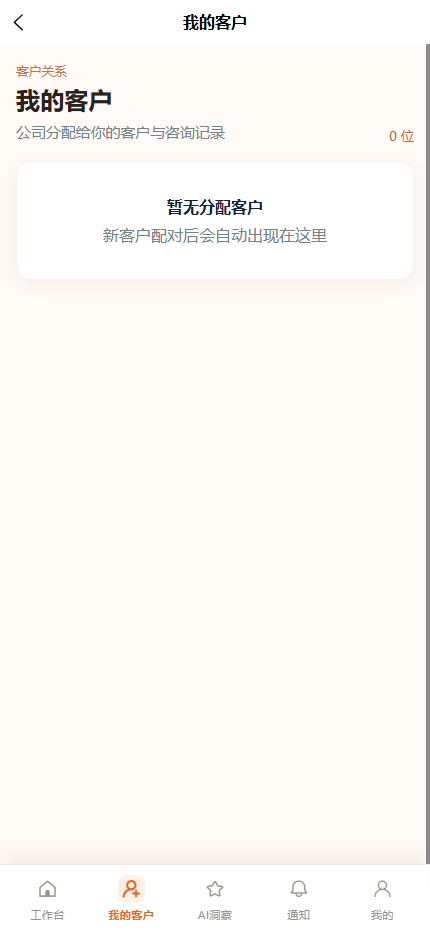
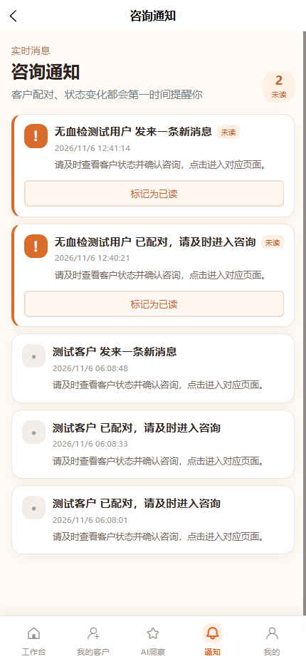
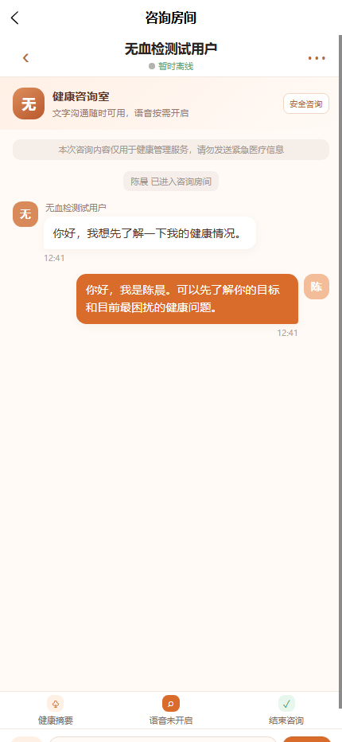
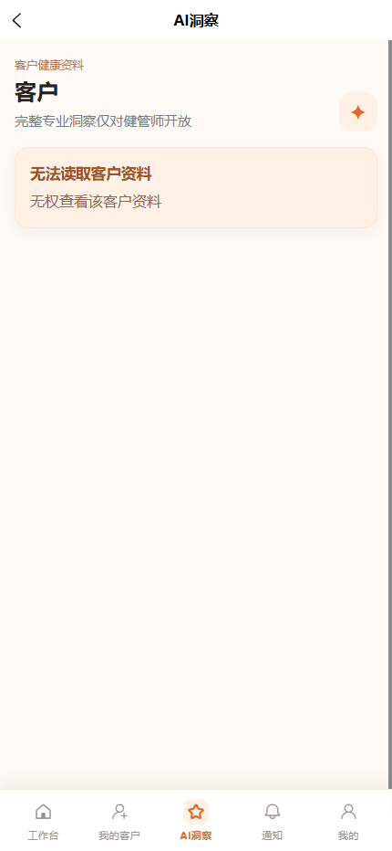
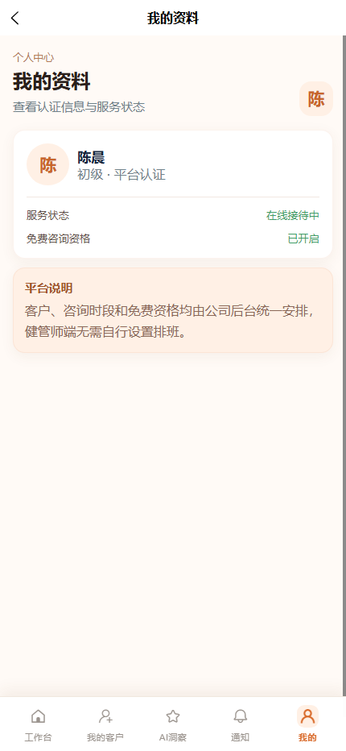
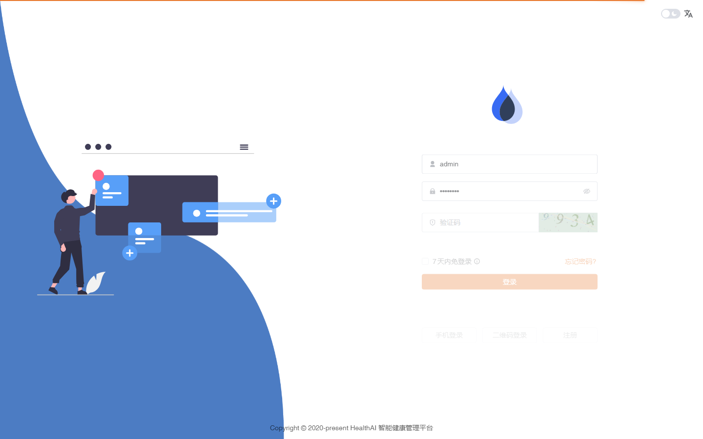
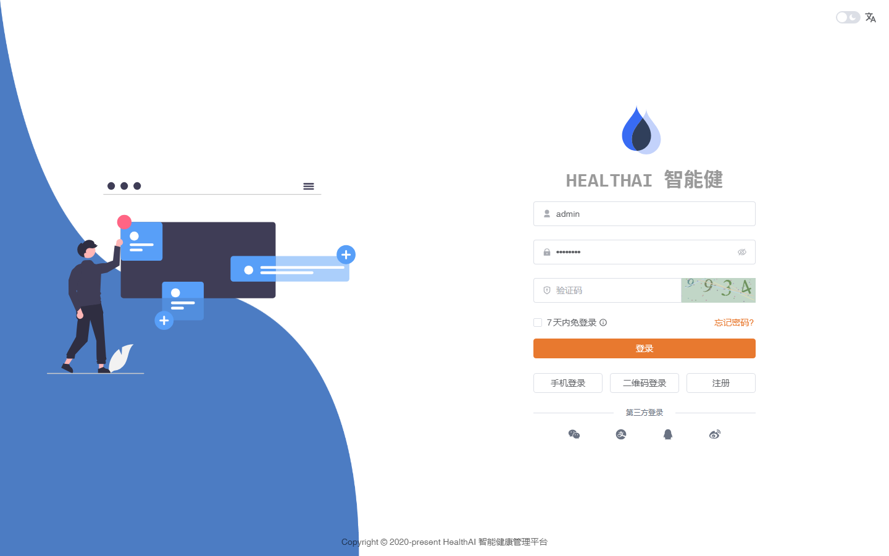
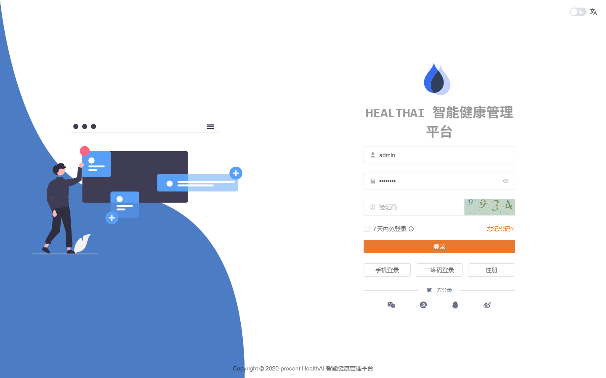